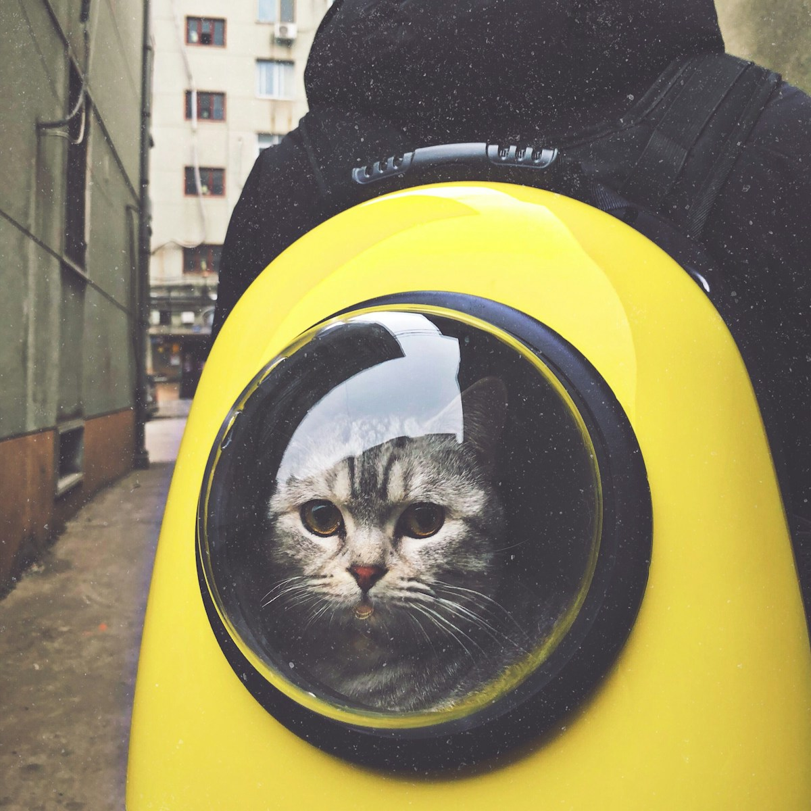
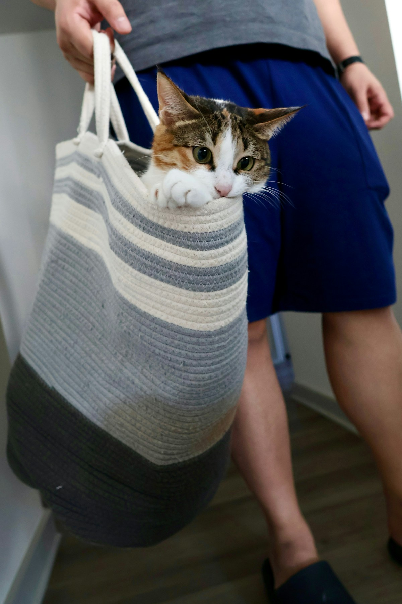
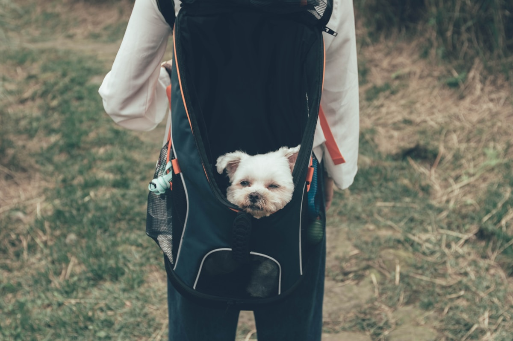

Cat Backpack Buying Guide 2026 + My Top Picks & What to Skip
Short answer: buy a mesh pack as your daily driver if you live somewhere hot, and keep a bubble only for cool-weather photos, after Mochi and a January walk I would rather forget. You should skip the no-name $15 specials, LED lights and cartoon ears, since none of that fixes comfort or safety. My picks sit in the sixty to a hundred and twenty dollar band, where mesh coverage and zip quality are worth the money. Match it to how often you walk, not the photo.
After a year of trial, error, and one very hot January walk I'd rather forget, I've formed strong opinions about what's worth your money in 2026. This buying guide is built from real use with my cat Mochi, not from reading spec sheets. Below I'll walk through bubble versus mesh, cheap versus premium, a pick for bigger cats, and the things I'd quietly skip. Think of it as a review of the Australian market written by someone who actually carries a cat around.
Bubble vs mesh: which is better?
The bubble versus mesh question has a clear answer in my book, and it depends entirely on climate and use. A bubble window is brilliant for photos and for cats who love to watch the world go by — but in our Australian heat it traps warmth and limits airflow. Mesh, on the other hand, keeps the cabin cooler and lets your cat smell and feel the breeze, which most cats find calming. My honest take: own a mesh bag as your everyday workhorse, and treat a bubble as a fun occasional alternative if your cat tolerates it.

Cheap vs premium: where the money goes
The cheap versus premium gap isn't just about a logo. Cheap bags save cost with thin fabric, weak zips, and unpadded straps that dig into your shoulders by the time you've walked a kilometre. Premium bags spend the extra on structured bases, breathable backs, escape-proof double zips, and weight distribution that makes a 6kg cat feel like 3. You don't need the most expensive bag on the market, but the very cheapest almost always disappoints within a season.
There's a middle band I'd actually recommend most people aim for. Around the ninety-to-hundred-and-thirty-dollar mark you typically get the structural basics done right — a rigid base, decent mesh, and straps you can wear for an hour without regret — without paying for designer trimming you'll never notice on a walk. I'd put the bulk of buyers in that band and only climb higher if your cat is large or you're out daily. Spending less than that usually means re-buying; spending more rarely adds comfort, just features.
Best for large cats
If your cat is on the bigger side, my advice is to ignore the cute tiny models and check the weight limit and internal dimensions before buying. Mochi is a sturdy tabby, and the bags that worked were the ones rated for at least 8kg with a wide, flat base so she could turn around. A cramped large cat is a miserable, noisy cat. Look for reinforced seams and a rigid bottom panel — without it, the bag sags and presses on their spine.

My personal top picks
For everyday Australian use, I'd pick a full-mesh climate-aware bag first — the one that kept Mochi cool all last summer. As a versatile runner-up, a mesh-and-bubble combo with a removable dome gives you both options. And for bigger cats, a structured, high-weight-limit carrier with padded straps is the only thing I'd trust for longer walks.
What I'd skip
A few things I'd pass on: sealed bubble-only bags for summer use, anything without a clear weight rating, bags with single-zip openings (escape risk), and the no-name $15 specials that fall apart fast. Fancy LED lights and cartoon ears are fun but irrelevant to comfort and safety — spend there only if the basics are already solid.

How I measure for the right fit
Before any of the bubble-or-mesh debate matters, you need the right size, and guessing is how people end up with a cramped cat. I measure Mochi from chest to tail base while she's stretched out, then add a few centimetres so she can turn around — turning is non-negotiable for comfort on a longer trip. Weight matters too: I weigh her at the vet once a year and pick a bag rated comfortably above that. A cat who can stand, turn, and lie down flat is a calm cat; one folded into a tube is a stressed one, and no premium feature fixes a bad fit.
Care and cleaning
The part nobody mentions in a review round-up is that the bag gets gross. Fur, the occasional hairball, and summer drool all build up fast. I look for a liner I can unzip and wipe, and I keep a small brush in the cupboard for the mesh. A bag that's a nightmare to clean gets used less, so ease of washing is quietly one of the most practical things I weigh now, right up there with ventilation and straps.
The bottom line for 2026
If you take one thing from this write-up, make it this: match the bag to your climate and your cat's size, then spend the minimum needed to get mesh ventilation, a safe zip, and a base that doesn't collapse. Skip the gimmicks, prioritise comfort, and your cat will thank you on every outing.
For Mochi and me, the right bag turned a stressful chore into something we both enjoy. Get the fundamentals right and you'll wonder why you ever fought with a hard crate.
— One year in, still learning, but finally confident about what's worth the money.
Frequently Asked Questions
Bubble or mesh — which should I buy?
For everyday Australian use, mesh wins because it keeps the cabin cooler and lets your cat feel the breeze, which most cats find calming. A bubble is brilliant for photos and window-watching but traps heat, so treat it as a fun occasional alternative rather than your daily driver.
Is a premium backpack worth the money?
The very cheapest almost always disappoints within a season, with thin fabric and weak zips. Aim for the ninety-to-hundred-and-thirty-dollar middle band, which gets the structural basics right. Climb higher only for a large cat or daily use. Spending more rarely adds comfort, just extra features.
How do I pick a backpack for a large cat?
Ignore the cute tiny models and check the weight limit and internal dimensions before buying. Look for a wide, flat base and reinforced seams so the bag does not sag and press on the spine, and a rating comfortably above your cat's actual weight. Room to turn around is non-negotiable.
What features should I skip?
Skip sealed bubble-only bags for summer, anything without a clear weight rating, single-zip openings that are an escape risk, and no-name $15 specials. LED lights and cartoon ears are fun but irrelevant to comfort and safety, so spend there only after the basics are solid.
How do I measure my cat for the right fit?
Measure from chest to tail base while she is stretched out, then add a few centimetres so she can turn around. Weigh her at the vet yearly and pick a bag rated comfortably above that. A cat who can stand, turn, and lie down flat is a calm cat; no premium feature fixes a bad fit.
Size & Fit Reference
| Size | Pet weight | Internal dimensions (L×W×H) | Best for |
|---|---|---|---|
| S | up to 5 kg | 30 × 28 × 42 cm | Cats, toy breeds, kittens |
| M | 5–7 kg | 33 × 30 × 45 cm | Average cat, small dog |
| L | 7–10 kg | 36 × 32 × 48 cm | Large cat, small–medium dog |
Looking for pet carriers & backpacks?
We stock the gear covered in this guide, with Australia-wide shipping and Afterpay at checkout.
Shop Carriers at Paws of Oz